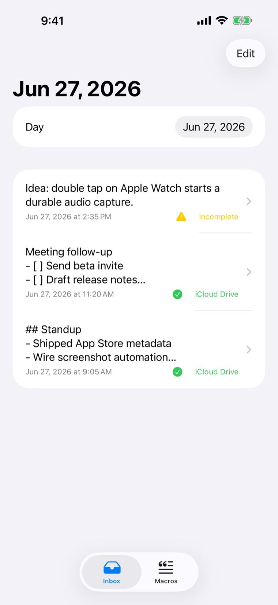
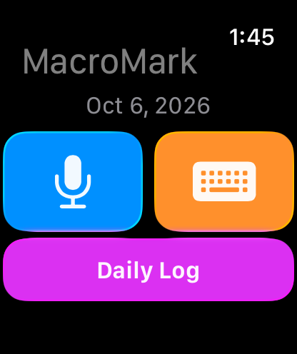
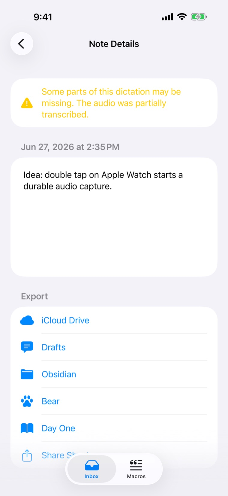
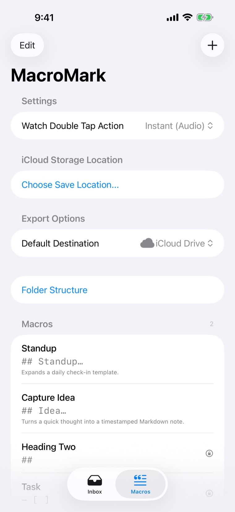

Complications and double tap
Start capture from the watch face or with a double-tap gesture. The Daily Log shows any day's notes on your wrist.
Apple Watch to Markdown
MacroMark is a capture tool for people whose notes live in Markdown. Tap the complication, talk or type, and lower your wrist. The thought is added to today's YYYY-MM-DD.md file in iCloud Drive.


MacroMark is built for the moment when taking out your phone is enough friction to lose the idea. The watch captures, the iPhone processes, and your notes folder gets one clean Markdown entry.
Open straight into capture from your watch face, or double-tap to start your chosen capture mode.
Instant audio capture handles long, rambling thoughts. The keyboard button opens the watchOS text input for dictation or typing.
The capture is saved on the watch with its original timestamp and waits there until the iPhone confirms it's safe.
The iPhone transcribes, expands macros and appends the entry to that day's Markdown file.
Captures go to plain text in iCloud Drive, or a folder you choose, so Obsidian, Logseq and any folder-based notes setup can read them. You can also send a capture to Drafts, Obsidian, Bear or Day One, or share it anywhere.
YYYY-MM-DD.md, instead of hundreds of tiny notes.9:05 AM ## Standup - Shipped App Store metadata - Wire screenshot automation 11:20 AM Meeting follow-up - [ ] Send beta invite - [ ] Draft release notes 2:35 PM Idea: double tap on Apple Watch starts a durable audio capture.
An example daily file in the default format: time-only timestamps with a blank line between entries.
Each capture stays queued on the watch until the iPhone has processed it and the export has succeeded or is saved for a retry. If a transcription only partly works, MacroMark keeps what it heard and tells you, so you never get a half-saved note without warning.

Spoken trigger words turn into Markdown. Built-in macros cover headings, lists, tasks, quotes and code. Variables like {date}, {time}, {location} and {clipboard} fill in when the note is processed. Add your own, edit the defaults, or restore them anytime.
| You say | You get | Use |
|---|---|---|
| Heading Two | ## | Section heading |
| Task | - [ ] | Checkbox item |
| New Journal Entry | ## {date} at {time} | Dated journal heading |
| Timestamp | {time} - | Inline time |
| Dropoff | {location} - | Where you were |
| Block ID | ^id-{uuid} | Block reference |
| Backspace | {backspace} | Delete the last character |

MacroMark uses Apple's own frameworks rather than a proprietary sync service, so your words stay in files you control.
Start capture from the watch face or with a double-tap gesture. The Daily Log shows any day's notes on your wrist.
Start an instant or typed capture, open a daily log, or append text to today's note from Shortcuts and Siri.
Captures and audio wait in a queue that survives restarts, and leave the watch only after the iPhone confirms them.
Markdown files stay readable, portable and easy to automate, organised by date in a folder you choose.
After a one-time setup on iPhone, typed and dictated watch text can go directly to a GitHub repository, an HTTPS webhook, or both. Your phone doesn't need to be nearby. Phone and iCloud delivery stay the default, and audio recordings always go through the iPhone.
YYYY-MM-DD.md on your branch. A hidden marker in each entry stops retries from adding it twice.
Idempotency-Key, so your receiver can deduplicate.
Replies written to a GitHub .reply.md file can be read on the watch. Details are in the Direct Send guide.
No account, no analytics or tracking SDKs, and no selling of personal data. KinNoKi Labs doesn't run servers that receive your notes. The full privacy policy has the details.
Captures, queued audio, macros and export status stay on your devices and in your iCloud Drive as they move through the capture queue.
Dictation uses Apple's Speech framework. Depending on language, device and network, Apple may process the audio to produce a transcript.
Location is used only when a macro asks for {location}. Direct Send, if you turn it on, sends text only to destinations you set up.
MacroMark is open source under the MIT licence. The roadmap and devlog follow the work in public.
Released October 2026 for iPhone and Apple Watch: watch capture, daily Markdown notes, verbal macros, browsing by date, visible export status and Shortcuts actions. Free, with every feature included.
Direct Send to GitHub and webhooks, replies on the watch, a complication for pending and reply counts, and audio transfers that keep retrying until the iPhone confirms them.
For setup help, privacy questions or App Store review contact, email dan@kinnokilabs.com. Bugs and feature ideas are welcome as GitHub issues.
Free on the App Store for iPhone and Apple Watch. Or build it yourself from the MIT-licensed source.